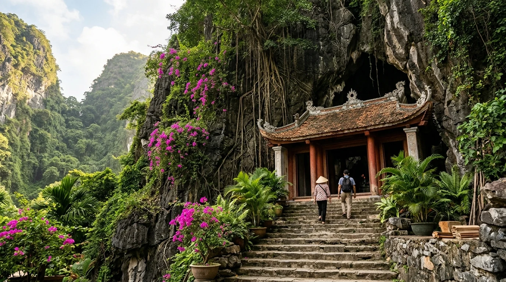

🧭 1. Tổng Quan Hải Sơn Cổ Tự & Kỳ Quan Chùa Động Mở Ra Đại Dương
Theo sử liệu địa phương và truyền thống lưu truyền vùng trấn Hà Tiên xưa, vào khoảng giữa thế kỷ XVIII, các nhà sư Phật giáo Thái Lan trên bước đường vân du bằng đường biển đã phát hiện hang động đá vôi tự nhiên sâu thẳm xuyên qua lòng núi An Hải Sơn nên dừng chân lập am tu hành; về sau chư tăng và ngư dân người Việt – Hoa – Khmer tiếp nối tôn tạo và đặt hiệu là Hải Sơn Tự (ngôi chùa trên núi biển). Năm 1989, cụm thắng cảnh Chùa Hang – Hòn Phụ Tử chính thức được Bộ Văn hóa công nhận là Di tích danh lam thắng cảnh cấp Quốc gia.
Điểm làm nên sức hút kỳ diệu của Chùa Hang là toàn bộ Chánh điện ẩn sâu trong lòng động đá vôi mát lạnh dài hơn 50m với muôn hình nhũ đá rủ xuống tự nhiên, trong đó có những khối "đá chuông" khi gõ nhẹ phát ra âm vang trầm bổng, cùng tôn tượng Phật Di Lặc bằng đá Non Nước nặng 22 tấn. Ấn tượng nhất là khi đi hết chiều sâu chánh điện, bước xuống các bậc đá nơi cửa sau của hang, tầm mắt bỗng vỡ òa trước bãi biển sóng vỗ rì rào nhìn thẳng ra Hòn Phụ Tử cách bờ chỉ khoảng 110m — biểu tượng tình cha con bất diệt giữa trùng khơi *(phần hòn Phụ cao hơn 33m đã bị sạt gãy do xâm thực sóng gió tự nhiên vào tháng 8/2006, hiện phần chân hòn Phụ và nguyên vẹn hòn Tử cao khoảng 30m vẫn kiêu hãnh vươn trên sóng biếc và đang được triển khai dự án kè bảo tồn di tích)*.
📜 2. Nghi Thức Hành Lễ Trong Hang Động Biển & Bảo Vệ Thạch Nhũ
Chùa Hang nằm trong hệ thống karst đá vôi ven biển Hòn Chông có hệ sinh thái và cấu trúc thạch nhũ triệu năm vô cùng quý giá. Du khách hành hương cần tuân thủ nghiêm ngặt:
🏮 3 Quy Chuẩn Văn Minh & An Toàn Tại Chùa Hang – Hòn Phụ Tử
🕯️ Hạn Chế Khói Hương Trong Lòng Động Đá Kín
Không gian hang đá tự nhiên dễ tích tụ khói: chỉ thắp đúng 1 nén hương nhỏ tại lư hương quy định gần cửa động, tuyệt đối không đốt vàng mã để giữ không khí trong hang luôn thoáng mát và không ám khói đen lên nhũ đá.
🪨 Không Bẻ Thạch Nhũ & Không Tự Ý Gõ Mạnh Đá Chuông
Mỗi centimet thạch nhũ cần hàng nghìn năm kết tinh từ giọt nước đá vôi: không bẻ nhũ đá, không khắc tên lên vách hang và cẩn trọng bước chân trên bậc đá ẩm hơi sương biển.
🌊 An Toàn Sóng Biển & Giữ Sạch Bãi Đá Cửa Hang
Khi ra cửa sau của hang ngắm biển Hòn Phụ Tử, đứng trên bậc thềm và bãi cát an toàn, không trèo ra các mỏm đá trơn trượt ngoài mép sóng lớn và không vứt vỏ chai nhựa xuống biển.
⛩️ 3. Lộ Trình 6 Trạm Xuyên Động Đá An Hải Sơn Ra Biển Hòn Phụ Tử
Lộ trình 6 trạm dẫn dắt hành giả từ cổng chùa dưới vách núi đá vôi An Hải Sơn, tiến sâu vào lòng động lễ Phật Di Lặc 22 tấn, chiêm ngưỡng vòm thạch nhũ đá chuông, bước ra cửa hang lộng gió đại dương, ngắm Hòn Phụ Tử và ghé làng chài – hàng thốt nốt Hòn Chông.
Hành Trình Chiêm Bái Chùa Hang (Hải Sơn Tự) & Hòn Phụ Tử
Xuyên qua lòng động đá vôi huyền ảo nghe tiếng chuông chùa hòa cùng tiếng sóng vỗ vịnh Thái Lan, đảnh lễ Phật đài và cầu bình an cho gia đạo.

Từ thung lũng xanh mát dưới chân núi đá vôi An Hải Sơn dựng đứng phủ rễ cây cổ thụ và hoa giấy rực rỡ, lối bậc đá dẫn hành giả qua sân vườn tháp nơi an nghỉ của các vị sư tổ khai sơn để tiến tới vòm cửa trước của Chùa Hang.
⛰️ Địa Chất Karst Ven Biển Độc Đáo
- Vùng Hòn Chông – Kiên Lương được mệnh danh là "Hạ Long phương Nam" với hàng chục ngọn núi đá vôi nhấp nhô sát bờ biển và ngoài đảo.
- Sân trước của chùa từng được mở rộng nhờ công sức gánh đất lấp hố sâu của chư tăng và Phật tử suốt nhiều thập niên.
- Vé vào khu danh thắng là 20.000 VNĐ/người lớn (trẻ dưới 16 tuổi miễn phí) phục vụ công tác vệ sinh bảo tồn.
🕊️ Giao Thoa Văn Hóa Mở Đất
- Lịch sử chùa gắn liền với sự giao hòa thân ái của cư dân Việt – Hoa – Khmer – Thái trên vùng biển Hà Tiên xưa.
- Mùa lễ hội lớn nhất diễn ra từ mùng 8 đến rằm tháng Tư âm lịch (mùa Phật Đản).
- Nên đi giày dép đế thấp chống trượt để thuận tiện đi trong lòng hang đá.
CHỨNG NHẬN CHIÊM BÁI CHÙA HANG – HÒN PHỤ TỬ VIÊN MÃN
Chúc mừng bạn đã hoàn thành trọn vẹn lộ trình chiêm bái 6 trạm tại Di tích thắng cảnh Quốc gia Chùa Hang (Hải Sơn Tự) & Hòn Phụ Tử (xã Kiên Lương, An Giang). Nguyện cầu hồng ân Tam Bảo và Đức Quán Thế Âm Nam Hải gia hộ gia đình bạn luôn thuận buồm xuôi gió, tình thâm phụ tử mẫu tử bền chặt muôn đời.
🧭 4. Lịch Trình 1 Ngày Chùa Hang — Hòn Phụ Tử & Vùng Biển Hòn Chông
Hành trình 1 ngày khám phá quần thể karst đá vôi ven biển độc nhất Tây Nam Bộ (nằm giữa trục Rạch Giá – Hà Tiên, cách trung tâm Hà Tiên ~35km):
Buổi Sáng (07h30 – 11h00): Xuyên Động Đá Chùa Hang & Ngắm Biển Hòn Phụ Tử
- 07h30: Đến khu thắng cảnh Hòn Chông (xã Kiên Lương), viếng vườn tháp sư tổ và bước qua cổng Hải Sơn Tự dưới chân núi đá vôi hùng vĩ.
- 08h30: Tiến vào lòng hang đá mát rượi chiêm bái tượng Phật Di Lặc đá trắng 22 tấn, tượng Phật Thích Ca cổ và ngước nhìn vòm thạch nhũ rọi nắng từ giếng trời tự nhiên.
- 09h45: Bước ra cửa động phía sau mở thẳng ra bờ biển, hít căng lồng ngực gió vịnh Thái Lan và ngắm thắng cảnh Hòn Phụ Tử cùng quần đảo Bà Lụa thấp thoáng ngoài khơi.
Buổi Trưa (11h15 – 13h30): Thưởng Thức Ẩm Thực Chay Xứ Biển & Nước Thốt Nốt Tươi
Dùng bữa trưa chay thanh mát bên bờ vịnh Hòn Chông với canh nấm rong biển, đậu hũ sốt sả, rau rừng luộc và giải nhiệt bằng ly nước thốt nốt tươi mát ngọt dịu đặc trưng miền biên viễn Tây Nam.
Buổi Chiều (14h00 – 17h30): Làng Chài Hòn Chông, Vườn Tiêu Xanh & Hoàng Hôn Biển Tây
- 14h00: Dạo thăm vườn tiêu xanh mướt và những hàng cây thốt nốt cổ thụ vươn cao bên sườn núi đá vôi vùng Bình An – Hòn Chông.
- 16h00: Ghé bến thuyền làng chài Hòn Chông tìm hiểu nhịp sống hiền hòa của ngư dân vùng biển Tây Nam và đón ánh hoàng hôn đỏ rực buông xuống mặt biển.